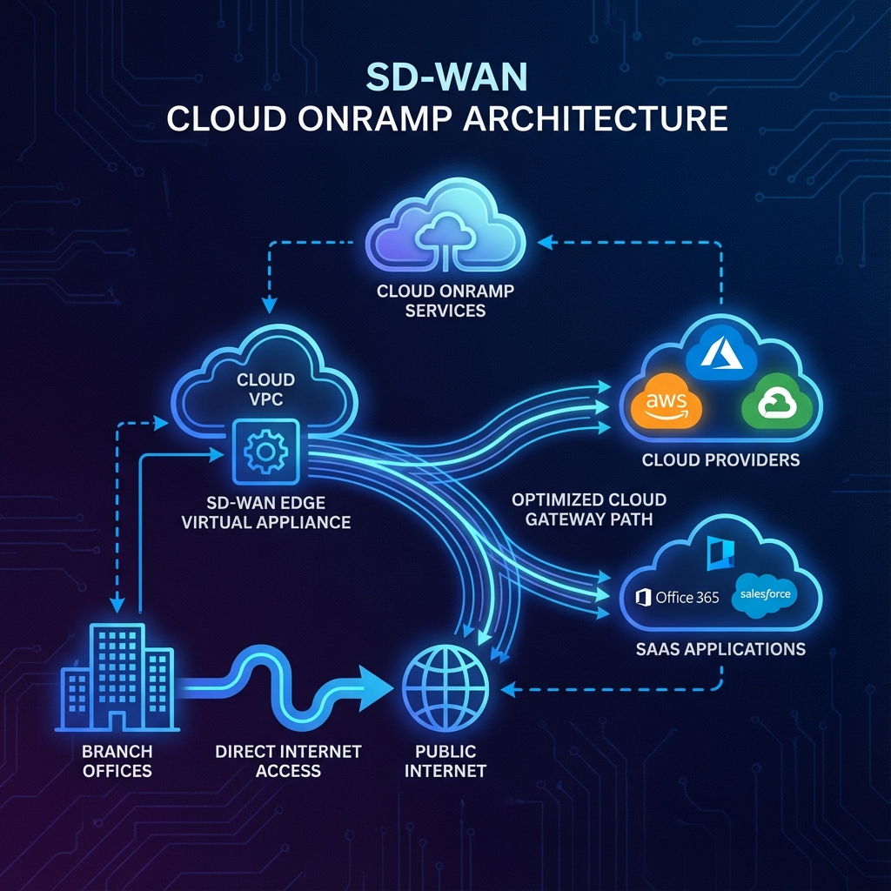

Chapter 12
Cisco Catalyst SD-WAN Cloud OnRamp
Learning Objectives
- Memahami Cloud OnRamp architecture dan use cases
- Mengkonfigurasi Cloud OnRamp untuk SaaS
- Mengimplementasikan Cloud OnRamp untuk IaaS
- Mengelola multi-cloud connectivity

Gambar 12.1 - Arsitektur Cloud OnRamp untuk konektivitas SaaS dan IaaS
Cloud OnRamp Overview
Cloud OnRamp menyediakan optimized connectivity ke cloud applications dan infrastructure.
SaaS
Optimize access ke Office 365, Salesforce, etc
IaaS
Connect ke AWS, Azure, GCP
Colocation
Extend SD-WAN ke colo facilities
Multi-Cloud
Unified connectivity across clouds
Cloud OnRamp for SaaS
Automatically optimize path selection untuk SaaS applications berdasarkan real-time performance.
How It Works:
1️⃣ Application Discovery
- Detect SaaS traffic (Office 365, Webex, etc)
- Identify application flows
2️⃣ Path Probing
- Probe multiple paths to SaaS endpoints
- Measure latency dan loss
3️⃣ Best Path Selection
- Route via Direct Internet Access (DIA)
- Or via hub/gateway if better performance
Supported Applications:
| Vendor | Applications |
|---|---|
| Microsoft | Office 365, Teams, SharePoint |
| Cisco | Webex, Umbrella |
| Salesforce | Salesforce CRM |
| Other | Box, Dropbox, Slack, etc |
Cloud OnRamp for IaaS
Deploy SD-WAN edges di public cloud untuk extend fabric ke cloud workloads.
Supported Cloud Providers:
- AWS: Transit Gateway integration, VPC connectivity
- Azure: Virtual WAN integration, VNET peering
- GCP: Cloud Router integration
Deployment Models:
| Model | Use Case |
|---|---|
| Cloud Gateway | Hub di cloud untuk branch access |
| Cloud Edge | Spoke in cloud VPC/VNET |
| Megaport/Equinix | Private connectivity via fabric |
Automation
Cloud OnRamp can automatically discover dan connect ke cloud VPCs/VNETs through APIs.